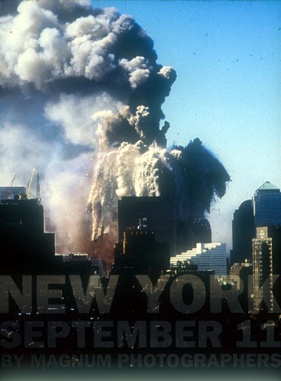

| by Tina Gregory |
|  |
|
Cover, ©Steve
McCurry, 2001, Magnum Photos
|
To many of us, the idea of a book of photographs on the September 11th attacks seems almost redundant. Though countless New Yorkers witnessed the horror live, for many, the images it evokes still largely comprise the endlessly repeated footage that the media burned into our collective memory in the days and weeks afterward. But, like the past work of the photojournalist cooperative Magnum Photo, this extraordinary collection of photographs and personal testimonies can shock even the most media-soaked consciousness out of visual burnout.
Magnum's typically far-flung members had coincidentally convened at their New York office on September 10th to discuss the future of documentary photography. The next day, eighteen of them made their way through fleeing crowds to record scene after disturbing scene and remained at the site in the days to follow, capturing the aftermath and the city's public, visual outpouring of grief. The resulting book, New York September 11, published by Magnum collaborator powerhouse books is accompanied by an exhibition at the New York Historical Society, on view though February. A portion of the proceeds is being donated to the New York Times 9/11 Neediest Fund.
The exhibit, one of the first museum shows about the attacks, is the first of an approximated six exhibitions that the historical society plans to present in the next few years as part of the museum's History Responds project. Other recent exhibitions on the topic, such as "Here Is New York," and the "September 11 Photo Project," which counted Magnum members among its participants, focused on audience participation and a sense of collective sharing of grief, and included amateur photographs. One might argue that the city's mourning, made visual in murals, makeshift memorials and photocopies, can be seen as its own crop of spontaneous history exhibitions, an interpretation that the poignant photos of candlelight vigils by Paul Fusco and Chien-Chi Chang seem to underscore. Other museums, such as the Smithsonian, have expressed a desire to wait to mount an exhibition, perhaps sharing the view that this event is still too raw to be relegated to historical annals in a non-participatory way.
But although truly interpretative material takes longer to develop, requiring time and distance from the attacks, an event of this magnitude is inevitably, immediately historicized. The exhibition in particular attempts to let historical reality set in, freeze-framed and silent. A subtle, steel-gray wall, imprinted with the names of the victims, becomes imposing in the small space of the gallery, a tangible tombstone for those who will have none. With an obvious predecessor in the Vietnam Memorial, the wall exemplifies the psychological weight of tragedy. Even the show's stark title, inclusive of only the bare facts of date and location, and devoid of semantic interpretation, carries weight.
One of the more striking, and yet familiar, works in the exhibition is Evan Fairbanks' amateur video, which was deemed in keeping with Magnum's documentary tradition, and included in the book as a series of small stills. Fairbanks, a cameraman on his way to Trinity Church to record a religious program, instead produced this horrifyingly intimate video, which includes ground-level view of the crash by the second plane and the collapse of the first tower. Beginning with a sea of faces marching past the camera in the first, calmer stages of evacuation, the scene eventually transforms into an otherworldly vision of people hurrying through an apocalyptic snowstorm. It is the small details in the video that are the most arresting; Fairbanks follows the path of a solitary, fleeing bird, and lingers on an abandoned cell phone, continually probing for a signal.
On the wall opposite the continuous loop is Steve McCurry's photograph of a chain of firefighters dwarfed by an immense expanse of wreckage, a ribbon of hose connecting them, an image that underscores their heroics while implying the relative futility of their attempts. An aerial view, perhaps taken from a building that had not yet collapsed, this is one of many images that shocks in the obviously dangerous conditions under which it was shot. Magnum founder Henri Cartier-Bresson stated, "Magnum was created to… oblige us, to bring testimony on our world and contemporaries according to our own abilities and interpretations… when one is nearby one must stay photographically in contact with the realities taking place in front of our lenses and not hesitate to sacrifice material comfort and security." His words are echoed in all these works, notably in Larry Towell's foray downtown with only a small, fully automatic camera, and McCurry's photographs of teetering wreckage shot through broken windows.
Both mounted in the exhibit and interspersed within the full-page photographs are written narratives from the photographers themselves. Though eloquent, their words attest mainly to a sense of disbelief and an echoing of the sentiments of many Americans, namely that these things do not happen at home. As Susan Meiselas put it, "All of us who go to these wild places know we can come home. It was very reassuring to have that harbor." Her photograph of J. Seward Johnson Jr.'s hyperreal sculpture of a man sitting with an open briefcase, left amid an empty drift of strewn paper and debris, is an exquisitely silent image, taken on a day in which no one had anything erudite to say. The sculpture at Liberty Square has now taken on a new meaning, standing for those thousands now gone.
 |
|
©Susan Meiselas, 2001, Magnum
Photos
|
The last room of the exhibit and a section of the book entitled "Farewell to the Towers" includes Magnum photos taken over the last quarter century. Understandably, the visual myth of the standing towers has now reached drastic proportions, with postcards, posters, and photographs selling out across the city, but none express the revered place in collective memory they now occupy more eloquently than does Joseph Koudelka's 1988 photo. In this image of immense proportions, covering an entire wall, the foreshortened towers rise at angles into infinity, before finally disappearing into mist.
Thomas Hoepker, who conceived of both the book and the exhibition, addresses the human need to deal with events visually and the heavy hand that the media plays in our perception of events. "Only when I saw the pictures did it become a reality," he states. "That is typical for our day and age, isn't it? If it's not on TV, it hasn't happened." A Magnum member deeply committed to the tradition of documentary photography, he reiterates that the book's sole purpose is to "bear witness." Like the past work of Magnum, the book itself is meant to be a document of that day, the visions within as tangible and yet as ephemeral as the singed snowdrifts of office paper depicted within.